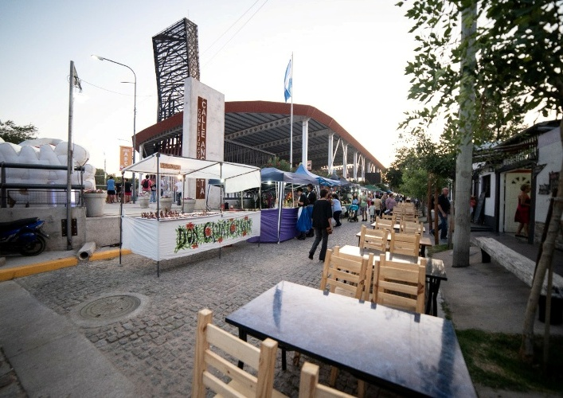
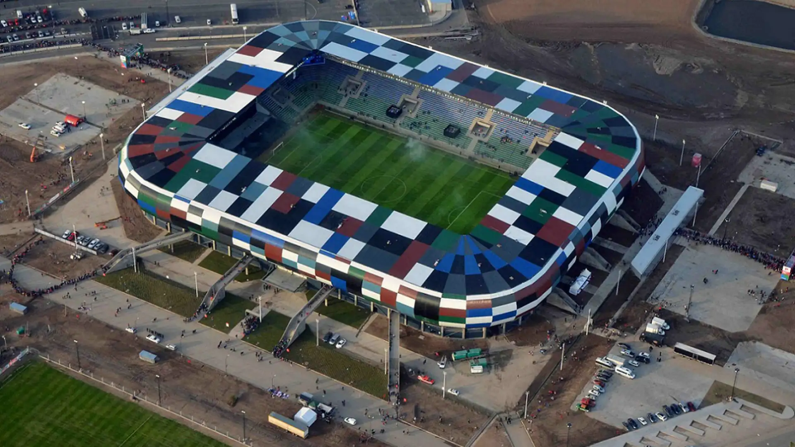

La ciudad del folclore y la naturaleza
Villa Mercedes, segunda ciudad más importante de San Luis, combina historia ferroviaria, cultura cuyana y espacios verdes junto al Río Quinto.
La puerta de entrada a las Sierras de San Luis • Descubrí la Calle Angosta, La Pedrera y mucho más
Explorar lugaresVilla Mercedes, segunda ciudad más importante de San Luis, combina historia ferroviaria, cultura cuyana y espacios verdes junto al Río Quinto.

El ícono de la ciudad con su vereda única.

Complejo deportivo y cultural más moderno de Argentina.